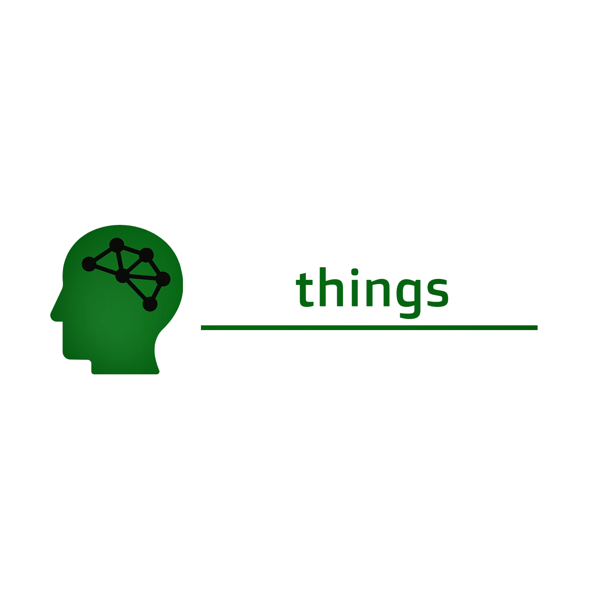

CASTERS
Cuando hablamos de caster sabemos que es una parte fundamental a la hora de nuestros eventos,tanto para los jugadores como para el espectador que lo mira via streaming,los casters son una parte del motor que en conjunto con el torneo se llevan de la mano.MASACRE cuenta con varios caster internacionales, desde europa,pasando por los Estados Unidos y america latina,el profecionalismo y la dedicacion se puede apreciar en cada streaming de los mismos.
Aquiles 76
Aquiless 76 : es un caster internacional avocado totalmente al competitivo internacional,desde España realiza sus directos con el mayor profecionalismo que puede tener un caster de su magnitud,con una larga trayectoria y experiencia Aquiles nos muestra en cada streaming como se vive cada minuto un evento en MASACRE,no te pierdas de ninguno de sus directos y apoya en cada momento a este excelente caster international.
sponsors:
